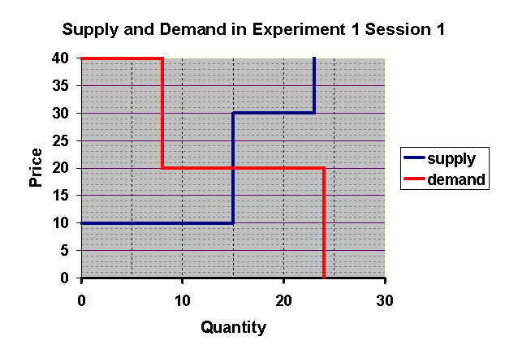
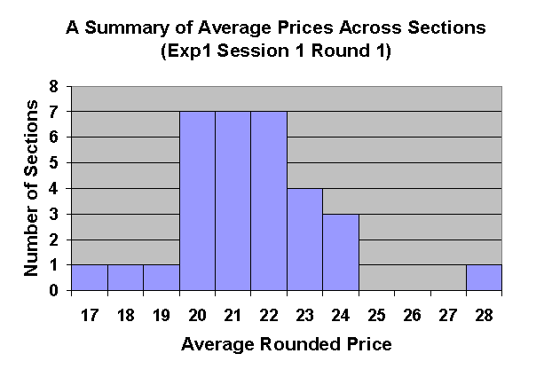
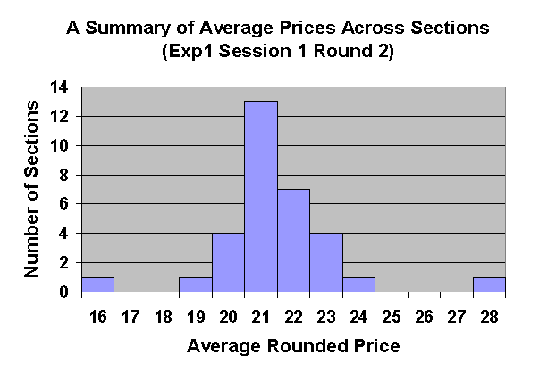
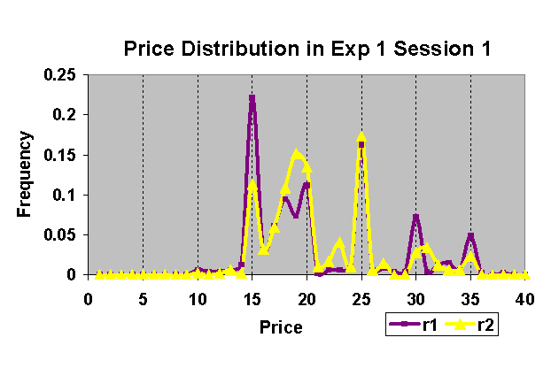

The exact number of persons with each buyer value and seller cost will, of course, depend on class size, but we have arranged the distribution so that the competitive price and the main qualitative features of supply and demand are the same for all class sizes. For example, a class of 47 students would have 8 demanders with buyer values of $40, and 16 demanders with buyer values of $20. There would also be 15 suppliers with seller costs of $10 and 8 suppliers with seller costs of $30. Figure 1.1 below shows the competitive supply and demand curve and the competitive equilibrium price and quantity in Session 1 with a class 47 students. As we see from the graph, the competitive equilibrium price is $20 and the competitive equilibrium quantity is 15 units sold.
Participants in the market are not told anything about the distribution of Buyer Values and Seller Costs. They know only their own values and anything they find out by talking to other participants. Typically, they participate in this market before they have even studied the theory of supply and demand. But even if they were familiar with competitive equilibrium theory, students would not know the demand curve or the supply curve and thus would not know the competitive equilibrium price at the time they make their trades. Since individuals have very limited knowledge of market conditions when they participate in the first round, we would not expect all transactions to take place at or close to the competitive equilibrium price. Nevertheless, the data shows that in the first round of Session 1, the average price observed in most classrooms is strikingly close to the competitive equilibrium price. This can be seen in Figure 1.2, which records the distribution of mean prices across the 32 classrooms for which we have data.
In the second round, as traders learned more about the prices at which others bought and sold, the mean prices in classrooms tended to cluster closer to the competitive equilibrium price of $20, with mean prices remaining slightly higher than the competitive price. This is shown in Figure below
We have also recorded and plotted the distribution of all recorded transactions in all sections. In Figure 1.4, the purple line shows the distribution of transaction prices in Round 1 and the yellow line shows the distribution in Round 2. Notice that in round 1, there are large numbers of transactions at the "focal" prices $15, $25, $30, and $35. In Round 2, the number of transactions at these prices dimishes, while there is an increase in the number of transactions that take place at prices close to the competitive equilibrium price of $20.
